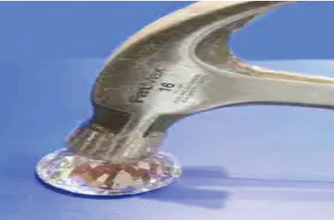

Diamonds are brittle precisely because they are so hard! Hardness is the ability of a material to resist plastic deformation. That is, its ability to resist scratching or denting. It is controlled by the arrangement of atoms within the material and by the strengths of chemical bonds between atoms. In order to change the shape of a material, it is necessary to break chemical bonds between its atoms; stronger bonds therefore make a harder material. A useful definition of toughness (the opposite of brittleness) is the amount of energy a material can absorb before it fractures. A material which can absorb a lot of energy is very tough; a material which cannot is very brittle. In metals, the mechanism by which energy is absorbed is plastic deformation. Breaking chemical bonds requires energy, and any energy used in this way is no longer available for fracture. This is why when you hit a piece of metal with a hammer it dents but does not crack. Atoms in diamond are held together by extremely strong covalent bonds, making them extremely hard. Because of this, diamond has no way of absorbing energy. All of the energy supplied to it in an impact is available for cracking, and so diamonds fail in an extremely brittle manner. (Note that this is nothing to do with whether or not the material is crystalline. Metals are soft, tough crystals. Diamonds are hard, brittle crystals.)
You can break a diamond just by dropping it onto a hard surface. They are fragile enough that it can happen, but not so fragile that it happens all the time. Accidentally hitting your ring against the handle of a shopping cart is another common way for diamonds to be damaged. Whack a diamond with a hammer and you’ll easily shatter it. The term that the OP is probably looking for is “toughness” or “tenacity”. This is a measure of how much the material can absorb energy while resisting shattering. Other measurements are tensile strength, compressive strength, and sheer strength. Tensile is pulling it apart, compressive is squishing it together until it deforms or breaks, and sheer is applying a force to it so that part of it will slide against the rest (i.e. sideways). Ductility is a material’s ability to deform while under tensile stress (example, pulling a piece of metal out into a wire). Malleability is the ability to deform while under compressive stress (example, hammering a piece of metal into a thin sheet) Diamonds are pretty much at the top of the scale for hardness. Scratch a diamond against pretty much anything else and the other thing gets scratched and the diamond doesn’t. Diamond’s don’t do so well on all of the others though. Their crystal structure makes it very easy for them to sheer in certain directions (this is called cleavage). Because they are so hard, diamonds are difficult to “cut” in the normal sense. If you want to cut through a diamond you pretty much need another diamond to do it. Instead, jewelers will more often cleave a diamond along its natural cleavage planes instead of cutting them. CODE - Brazil6